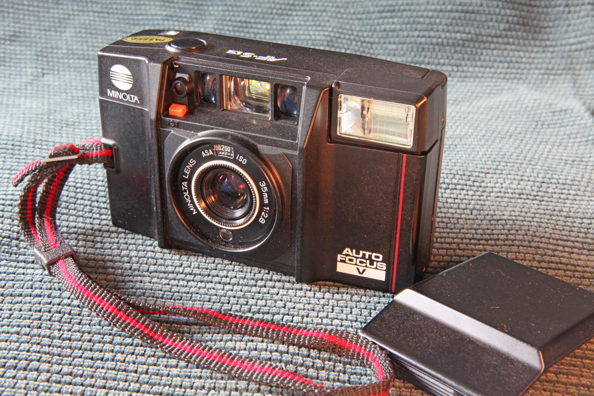

Minolta Talker
The camera that talks back — three spoken phrases coach your photography

Overview
The Minolta Talker (model AF-Sv) is a 35mm point-and-shoot camera launched in 1984 and widely credited as the first talking camera. It is mechanically identical to the popular Minolta AF-S — 35mm f/2.8 Rokkor lens, active infrared autofocus, CdS programmed auto-exposure, Seiko two-blade shutter (1/8–1/625 s), pop-up flash, ISO 25–1000 — with a voice module added to the body, switched by an on/off control on the back door. Sold as the Talker in the United States and the Talkman in Japan (the Talkman, from September 1984, added a date back and a handgrip), it listed at about $129.50 in a 1984 New York City advertisement.
The voice module speaks exactly three phrases, each wired to a sensor state: "Load film" (half-press with no film loaded), "Too dark, use flash" (flash down, slow shutter), and "Check distance" (flash up, subject beyond flash range). The shutter fires regardless of whether the photographer heeds the advice — the speech is guidance, not a gate. Period advertising sold the machine as "the world's easiest 35mm"; collectors later nicknamed it "the Minolta Mother-in-Law." A talking camera appears in the museum's speech-output family, but it is the only one whose speech watches the physical world and coaches a physical craft.
Deep dive
The Talker's entire vocabulary is three sentences, and each one is a sensor reading rendered as speech. "Load film" triggers when the film-pressure switch reports no film and the shutter is half-pressed. "Too dark, use flash" triggers when the meter reads a slow shutter speed with the flash down — the camera simultaneously lights a red LED in the viewfinder, so hearing and seeing work in parallel. "Check distance" triggers when the flash is up but the active-infrared rangefinder reports the subject beyond flash range. Because the shutter always fires, the machine never blocks the user; it announces what it thinks is wrong, and the photographer either fixes it or takes the picture anyway.
The Talker watches the same sensors every camera watches, but instead of only showing LEDs it narrates. The design intent — explicit in period advertising and reviews — was to make the 35mm camera usable by novices who would not think to look for a blinking viewfinder light. The voice module has an on/off switch so experienced photographers could silence it. Japanese-market units carried a three-position English/Japanese selector, and two independent owners report that US units speak Japanese if the switch is wedged to a middle position — evidence the hardware carried both language ROMs.
The base camera is the Minolta AF-S, a fixed-lens autofocus compact with a 35mm f/2.8 Rokkor, active IR autofocus, CdS programmed AE, Seiko two-blade shutter, pop-up flash, and 2× AA batteries. The Talker adds a voice module powered by the same batteries, with its own small speaker. The speech IC is not publicly documented; period material and teardown reviews describe only "a voice chip." The camera sold at roughly $129.50 in 1984 and shipped with a standard instruction booklet.
The Talker is generally credited as the first talking camera, and it is the best-known of the handful that followed; Polaroid's talking cameras (OneStep Talking, 636 Talking) came a decade later, in 1995–1998. Mike Eckman's 2021 review demonstrates all three phrases with audio, PetaPixel covered the camera in 2017, and camera-wiki and CollectiBlend document the AF-Sv/Talkman line. Working units still surface for a few dollars, and the camera appears regularly in discussions of speech synthesis in consumer devices — the same 1980s moment that produced the museum's TRS-80 Voice Synthesizer and the first talking calculators.
Team & pioneers
- Minolta Camera Co., Ltd. Manufacturer of the AF-S/AF-Sv/Talkman line; the engineers behind the voice module are unnamed in available sources.
Media
Sources
- Mike Eckman — Minolta AF-Sv Talker review (2021), with audio of all three phrases
- PetaPixel — The Minolta Talker: the world's first talking camera (2017)
- camera-wiki.org — Minolta AF-Sv
- Butkus camera manual archive — Minolta Talker manual PDF (primary source)
- Jim Grey — Down the Road: Minolta Talker